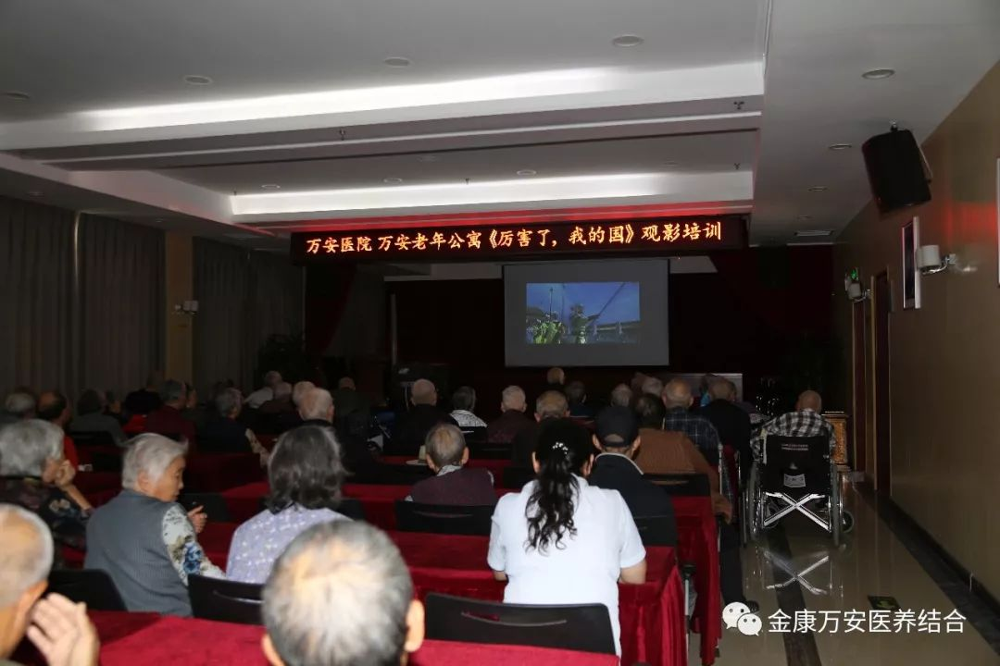
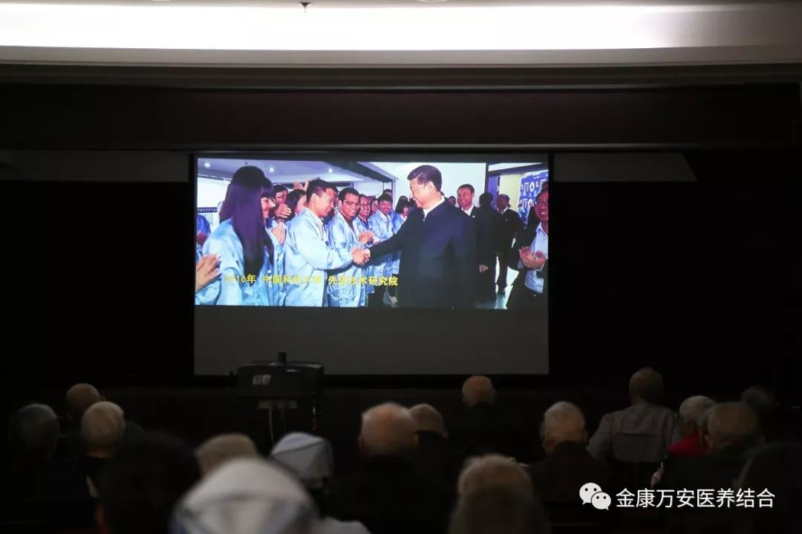
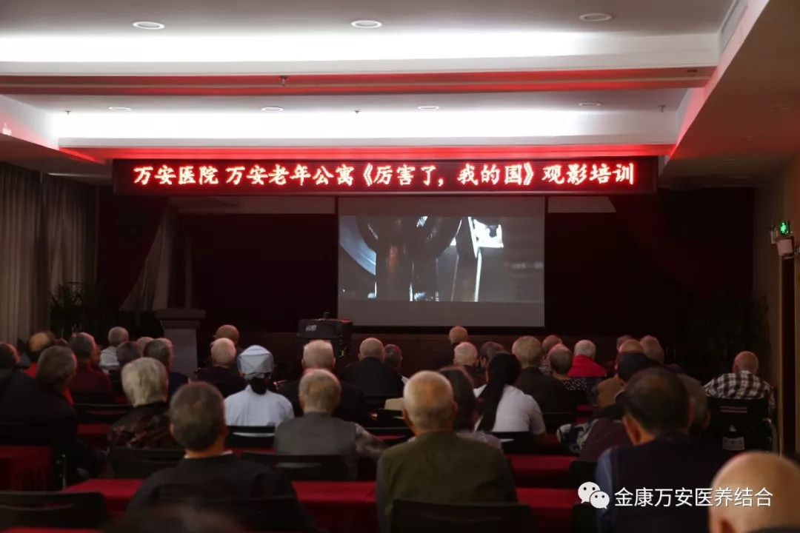
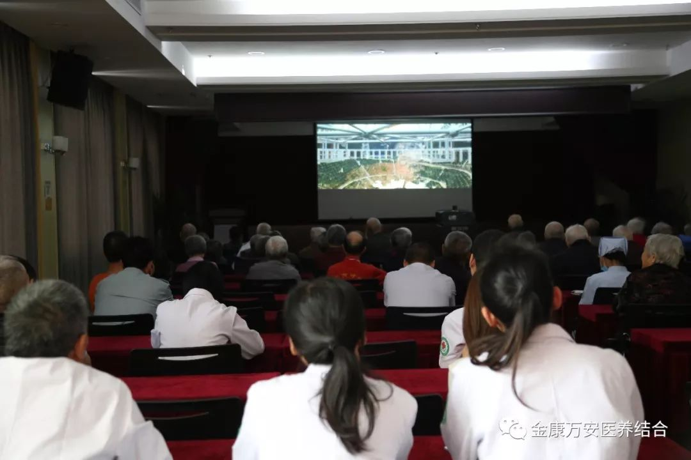
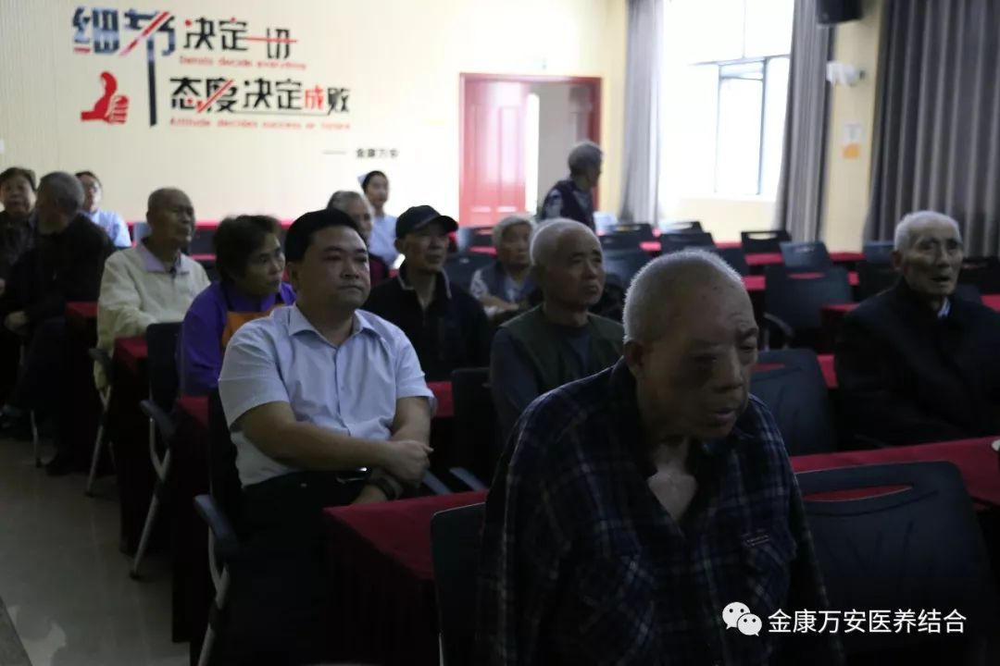

漯河万安康复医院、万安老年公寓观看纪录片《厉害了，我的国》
人气: "" 时间：2018-10-08
为进一步凝聚“中国力量”、弘扬“中国精神”，激发我院职工爱国热情，10月8号下午，漯河万安康复医院、万安老年公寓组织入住老人、医护人员、养老护理员等集中观看《厉害了,我的国》纪录片。院长王卫峰、业务院长银令令、业务院长王立信、业务院长万素华、后勤院长杨延顺等院领导一同观看了影片。


《厉害了，我的国》透过镜头用90分钟时间将党的十八大以来中国的发展成果与前行轨迹，以及十九大报告中习近平总书记提出的“中国特色社会主义进入新时代”重大论述，以纪录电影的形式展现给观众。影片记录了中国桥、中国路、中国车、中国港、中国网一个个非凡的超级工程，展示了人类历史上最大的射电望远镜FAST、全球最大的海上钻井平台“蓝鲸2号”等引领人们走向新时代的里程碑般的科研成果。从圆梦工程到创新科技、从绿色中国到共享小康，电影分享震撼影像的同时，也娓娓道来背后故事，直抵人心地讲述中国故事、刻画中国面貌、展现中国变化，传递的正能量令人振奋、备受鼓舞。



观影中，老人和我院职工们全神贯注，内心一次又一次受到强烈震撼，大家对祖国在过去五年取得的惊人成就感到无比自豪，对宏伟蓝图的描绘感到无比振奋。
观影后，我院职工纷纷表示，我们要像影片中的工程师，科学家，拓荒者们一样在自己岗位上坚定信仰、埋头苦干，为金康万安的发展贡献力量！